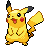
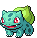
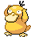
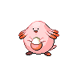
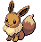

修复登录页崩溃
工作◉ 派发执行中
规格配套原型（非业务实现 · mock 数据 · 不连 API）。区域 A 为中保真：宿主表面用中性灰示意 token，真实视觉由 dsh ui-primitives（圆角守卫 / 亮暗主题）在实现期决定——世界观 scoped 层（精灵 / 徽章）为真实设计；区域 B 为高保真：DESIGN_SYSTEM.md 全量 token 真实渲染。文案全部取自 uiux-design.md §8。挂载点变更（U16 · 2026-10-11 用户裁决）：面板与设置从「右侧栏 tab + settings cards」改为插件自有 detail page（Plugins 页 → 本插件，main 区全宽、独立于会话）——区域 A 的示意载体已随之改为「左侧导航 + 插件页面」；dsh 的 main 区为互斥路由（会话与 Plugins 页二选一），会话区仅作 conversation chip 挂载与入口关系示意，经下方「main 区视图」切换检视。
挂载点变更（U16 用户裁决）：不注册右侧栏 tab、不复刻宿主 settings cards——面板五分段与设置八分区收进插件自有页面（plugins.detail.section，main 区全宽、独立于会话）。注册面 = 插件页面 ×1 + conversation header chip ×1 + 桌宠 helper ×1（区域 B）；背包内 = 分区选单 + 分区整页 + 保存制（U21 用户裁决「不要小卡片，每类设置单独一个页面」：八分区横向选单一次只显示一个分区的完整表单，每分区标题行右侧「保存」提交；与主应用设置中心同名同构、配置项 100% 对齐——U20；形态专属行为项标「作用于主应用」badge；实体管理与即时动作不走保存制——详见 A2）。可达性：左导航两步 / chip 点击 / 桌宠双击一步（host:pageOpen）；conversation input 不占用——对话即捕捉（U3）。切换下方状态与窗口形态检视全部交互状态（§4.2 六类）。

捕获中24:59
草丛静悄悄——在会话里说一句，或用 ⚡发报，第一只野生宝可梦就会出现



U21 用户裁决（2026-10-11 关卡回流：「不要小卡片，每类设置单独一个页面，跟桌面应用保持一致」）：背包内 = 八分区横向选单 + 分区整页（对齐主应用设置中心「上选单下内容」）——一次只显示一个分区的完整表单（非摘要卡），废弃原八分区卡多列网格；保存制对齐主应用：每分区页标题行右侧「保存」按钮，36 共享配置键编辑草稿后保存统一提交（host 命令不变，仅提交时机；开关可点击体验脏标记→保存流）；未保存角标（静态「●」，不闪烁）+ 离开背包分段时未保存确认（在上方工作台内切换分段触发）；实体管理（分类/标签/维度/agent 卡/提示词/会话过滤）与授权/测试连接/立即拉取等即时动作不走保存制。八分区内容与主应用设置中心 100% 对齐（U20）：原派发段并入 Agent 分区、原收音机段改组飞书分区（+我的称呼）、显示分区新立（语言+显示偏好+逾期模式/相对截止）、运行日志查看器提前进 v1。带「作用于主应用」badge 的项 = 配置写共享库、行为仅在主应用侧生效；「dsh 面板同读同生效」= 共享值同时驱动 dsh 自身呈现。本区与页面内「背包」分段同构（同一结构实例化），独立陈列供逐分区细看。
图鉴复古风与主应用桌宠同构（FR-P6）。色环全程被动显示剩余时间（时间盲友好）；台词气泡瞬态——基础 3.5s + 每字 120ms、封顶 12s，悬停暂停、点击收起；▼ 仅新事件闪 3 次后停（同屏唯一闪烁名额）。切换状态检视动画矩阵（§3.4）；悬停精灵浮现 ☰ 展开快捷图鉴屏；「减弱动效」开关模拟 prefers-reduced-motion 双通道降级。
背包还有未保存的修改。